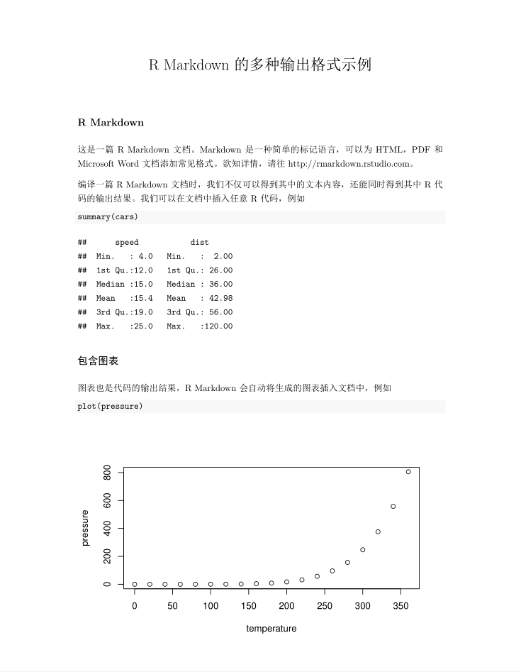
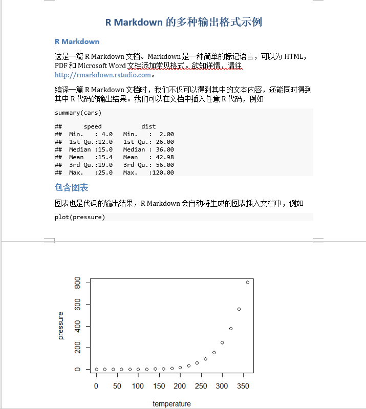
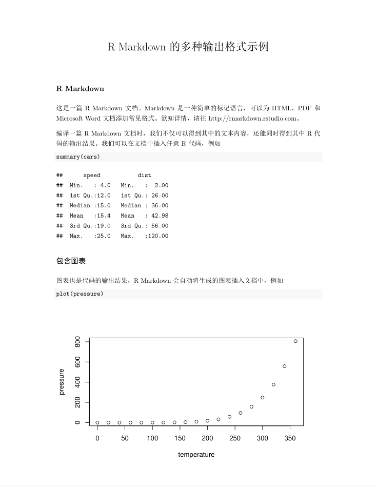
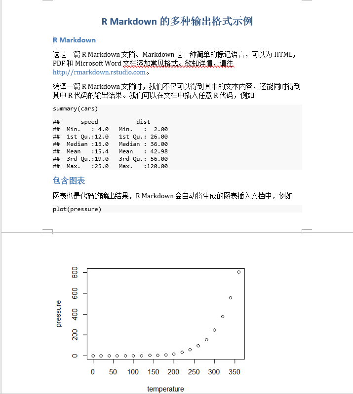
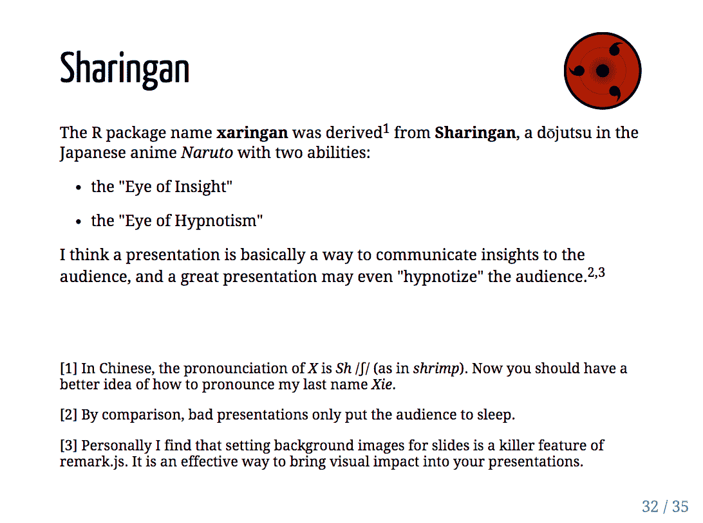
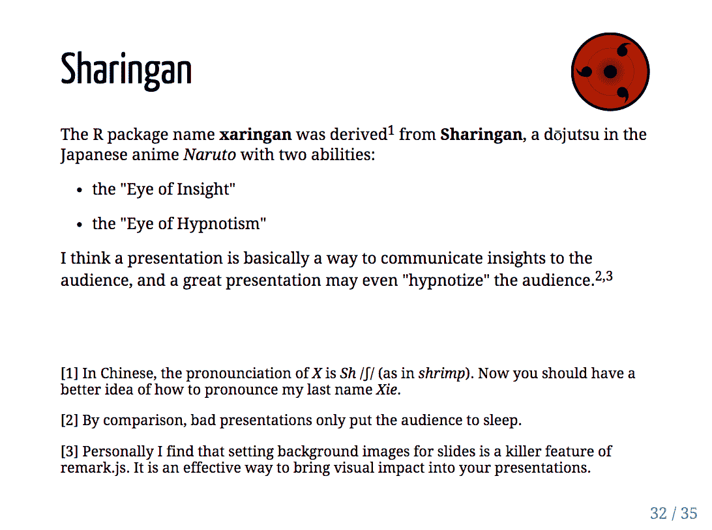

前言
(PART) 基础
1 认识 R Markdown
rmarkdown (Allaire, Xie, McPherson, et al. 2021) 一个是 R 语言的扩展包，提供了以 .Rmd 文件格式为中心的数据科学写作框架。它的核心思想是创作包含文本和代码的动态文档，让数据与叙事并进，最终提供易重复，易共享的数据分析环境。
本章从 R Markdown 的应用开始，遴选了不同场合 R Markdown 的用例和解决的问题。包括撰写数据分析报告，发表电子书，设计数据驱动的个人简历，建立个人网站，创作演示文档和交互报表。最后回顾了 R Markdown 渊源的历史发展。话不多说，我们在以下各小节中快速浏览一些 R Markdown 文档的用例，它们有些直接基于原生的 R Markdown 包，有些来自 R Markdown 的扩展包。越来越多的扩展为 R Markdown 文档增加了新的输出格式，为生态体系提供了更丰富的功能覆盖。读者可以挑选自己最感兴趣的使用场合深入后面对应章节的阅读，也可以在 Github 上以 R Markdown 为关键词探索各式各样的输出格式。
1.1 数据分析报告
从诞生开始，R 便是一门致力于交互式数据分析的语言，R 的用户便时常有着制作数据分析报告的需求，这也是 R Markdown 最常见基础的用途。它支持 HTML, PDF, Word, EPUB 等多种输出格式以及与之配套开箱即用的主题系统。用户可以将创作重心放在内容上，写作完成后一键输出不同格式，让 R Markdown 的自动化的编译机制代劳形式上的调整。例如，以下 HTML，PDF 和 Word 三种格式的文档是用同一个 R Markdown 生成的。
 

除了多样的输出格式外，R Markdown 驱动的数据分析报告还解决了很多数据分析报告写作中的痛点：
之前在使用 R 或者其他数据分析工具时，经常需要在 Word 里写结论，在脚本里敲代码，在图表区生成图，将它们复制粘贴到一起后，还要操心格式问题，有没有什么自动化的方法？
我的工作需要日常性的数据产出，如何创作一篇参数化、可复用的文档模板，从此可以在更新数据的同时同步结论和图表？
如何确保分析过程和结论是可重复的，别人是否能利用同样的数据得到我的结论？
我不了解网页开发，如何在报告中插入可交互的图表和网页元素？
同时，R Markdown 还为 R 语言之外的几十种编程语言提供了一定程度的支持，例如 Python，C++，Julia，Bash，SQL 等，这意味着我们可以在一篇报告中混用多个工具。Python 作为数据分析师的另一大利器，在 reticulate 包 (Ushey, Allaire, and Tang 2021) 的帮助下可以流畅地与 R 代码在 R Markdown 文档中并用。下面的例子中，我们先用 R 导入数据并作数据预处理，随后将 R 中的数据传递框到 Python 环境中，生成 pandas 格式的 DataFrame, 并用 seaborn 包作可视化。
# R 部分: 导入和预处理美国各州犯罪数据
arrests <- datasets::USArrests
arrests$State <- rownames(arrests)# Python 部分，导入 R 数据，提取谋杀率最高的 10 个州，并用 seaborn 包作柱形图
import pandas as pd
import seaborn as sns
top_states = r.arrests\
.sort_values(["Murder"], ascending = False)\
.head(10)
sns.barplot(x = "Murder", y = "State", data = top_states)
我们在 @ref(basic-other-languages) 节给出了在数据分析项目中混用 SQL，R 和 Python 的例子，并在 @ref(other-languages) 中详细讨论了如何在 R Markdown 中结合其他编程语言。
当读者需要创作更大篇幅的文档甚至书籍时，我们可能不希望仅使用一篇 R Markdown 文档组织全部内容。bookdown 包 (Xie 2021a) 可以让用户将内容分散到多个 R Markdown 文档中，在编译时合成各文档便提供更适于书籍和在线文档的输出格式。此外，bookdown 对 R Markdown 的扩展还包括支持交叉引用，定理公式环境，文献引用等。bookdown 的输出结果非常适合用于制作在线教材与讲义，例如北京大学李东风老师的《R 语言教程》，本书的在线版本也是用 bookdown 生成的。bookdown.org 列出了更多 bookdown 制作的在线书籍。

(#fig:bookdown-chinese-demo)使用 bookdown 制作的中文图书范例, 一个章节对应一个 R Markdown 文档
在学术报告或论文的撰写中，用户可能对格式有更细致的要求。越来越多的包提供了易用的 R Markdown 模板，为我们免去了繁杂的手动格式调整，编译后即可直接投稿。rticles 包 (Allaire, Xie, R Foundation, et al. 2021) 提供了很多期刊和出版商的模板文档，例如 R Journals 和 Journals of Statistical Software。中文用户可能较常用 rticles 提供的 CTeX 输出格式，它让 R Markdown 输出的 PDF 可以正常显示中文字符。
1.2 交互笔记本
R Markdown 及 bookdown 文档可运行代码，格式化长篇文本，插入 LaTeX 数学环境，支持交叉引用，特别适合统计，数据科学，计算机科学等领域的学生，研究人员和爱好者们作为首选的笔记本格式。
(#fig:notebook-preview)RStudio 支持实时预览 R Markdown 笔记本格式
如图 @ref(fig:notebook-preview) 所示，R Markdown 笔记本支持插入代码，保存它们的运行结果，添加格式化文本和批注等功能。R Markdown 的交互特性让学习记录变得十分自然：我们添加一段代码，运行后得到预料之中/意想不到的图片，或许随后在下面的多个代码段中反复调整某个参数，直至得到想要的结果。在此过程中我们发现了更多相关的包/模组，写下对不同模组的总结，并链接网络上其他人的用例，甚至开始撰写自动化脚本。最后，我们可以一键生成包含了这一系列思考和学习过程的 HTML，PDF 精美文档。图 @ref(fig:notebook-preview) 是一个 PDF 笔记文档示例。

(#fig:notebook-preview2)用 R Markdown 生成 PDF 学习笔记
即便我们的工作不涉及数据处理或运行代码，使用 R Markdown 作为笔记软件也有许多好处。我们可以流畅的使用版本控制工具，管理笔记依赖的数据，图片的资源。我们可以将长篇笔记拆分为多个源文档，用纯文本文件管理输出设置，形成清晰的项目结构。RPubs 和 bookdown 等平台提供了免费的 R Markdown 文档发布服务，我们可以发布自己的笔记与心得，便利他人和未来的自己。
1.3 个人简历
一些 R Markdown 扩展包提供了适用于个人简历和 CV 的输出格式。例如基于 pagedown 包 (Xie et al. 2021) 的简历模板，和 vitae 下多种 CV 模板。
除了使用模板外， R Markdown 还能让你的简历变得更加“数据驱动”。datadrivencv 包把简历中的各项教育背景，工作经历和项目经验等视作电子表格中的一条记录，我们可以仅维护这张数据表，R Markdown 负责简历的格式。除此之外，还可以插入 R 代码生成的交互图表，让我们的简历动起来。图 @ref(ns-cv) 是 datadrivencv 包的作者 Nick Strayer 结合 pagedown 包 (Xie et al. 2021) 制作的个人简历。
(#fig:ns-cv)(ref:ns-cv)
(ref:ns-cv) Nick Strayer用 datadrivencv 和 pagedown 包制作的 CV 示意
1.4 网站
原生的 R Markdown 包内置了生成简单静态网站的功能。简单来说，我们在一个 yaml 文件通过键值对定义网站的标题，导航栏，页面结构等元数据，而后创建几个 R Markdown 文档在其中填充内容，内置的站点生成器将每个 R Markdown 文档渲染为一个 HTML 页面输出。
(#fig:unnamed-chunk-6)用 R Markdown 创建网站
为满足创建更加复杂且精美的网站的需求，blogdown 包使用了第三方的开源静态网站生成器：Hugo。Hugo 是目前最快，最受欢迎的静态网站生成器之一，一般用户通常需要用命令行的方式与之交互。作为幸福的 R 用户，我们可以在 R Markdown 文档中写作，随后调用 blogdown 中封装好的函数操作 Hugo 的编译功能，最后生成网站。

(#fig:hugo-themes)blogdown 包可以使用 Hugo 主题
包如其名，对个人用户来说，blogdown 特别适合制作博客类的个人网站。借用免费的域名，读者可以展示个人项目，存放简历和 CV，归档学习笔记和心得，求职时为自己添加一份切实的筹码。除此之外，我们还可以用 blogdown 。Hugo 的主题列表 列出了丰富的网站模板，其中大部分均可以在 blogdown 中一键生成。最后，我们给出几个不同主题的 blogdown 网站的样例
1.5 幻灯片
R Markdown 和扩展包支持输出多种常见的幻灯片格式，例如 PowerPoint，Beamer，isoslides 和 Slidy 等。除此之外，我们特别推荐读者关注 xaringan (Xie 2021c) 包，它基于 JavaScript 中的 remark.js 库设计了灵活的输出方案。默认的模板，了解 css 和一定 JavaScript 的读者还可以在此基础上设计出炫酷的演示文档。xaringanExtra 包在此基础上提供了更多有趣的增强插件。读者可以在 https://slides.yihui.org/xaringan/#1 和 https://pkg.garrickadenbuie.com/xaringanExtra/#/ 看到更多例子。
 

(#fig:xaringan)xaringan 提供的幻灯片模板示意
1.6 交互报表
报表是一种常见的商业报告形式，用 R Markdown 开发报表不仅能将分析过程与商业结论天然结合地在一起，还能利用 R 语言强大的图表功能。flexdashboard (Iannone, Allaire, and Borges 2020) 包基于 HTML 格式提供了这类报表的模板，还内置了一些 HTML 组件作为常见报表元素， 例如指标盒，增长仪表，导航栏等。
(#fig:flexdashboard)用 flexdashboard 包制作的仪表板
除初次开发上的简便外，R Markdown 生态系统还提供了丰富的测试，部署，自动化和持续集成功能，确保我们的数据产品可以快速投入生产。
1.7 动态文档
除了直接的界面写作外，我们还可以调用输出 API rmarkdown::render 生成结果文档，并可以控制 R Markdown 输出时使用的数据源。这让 R Markdown 的自动化批量生产成为可能。一个典型场景是：数据库每日更新全国销售数据，而数据分析师用自动化脚本控制 R Markdown 分地区，分职务地生成多个针对各负责人的报表。这样的动态文档是通过参数实现的，我们在源文档中使用参数的名字，而不是具体的数据。随后在脚本中用 rmarkdown::render 动态传入当日的数据。

(#fig:dynamic-document)根据 Shiny 输入动态生成 R Markdown 文档
图 @ref(fig:dynamic-document) 是一个结合 Shiny 动态生成 R Markdown 输出文档的例子。我们允许用户上传某个数据集，挑选需要数据清理的维度，随后把清理结果动态地传递给 rmarkdonw::render，生成右侧截图所示的输出文档。
1.8 R Markdown 的渊源与历史
本节回顾了 R Markdown 在技术工具层面的渊源和它的发展历史。喜欢直接进入实际操作部分的读者可以跳过本节，从第 @ref(installation) 章开始。如果读者已经掌握了 R Markdown 的基础知识，书写过一些 R Markdown 的文档, 也可以直接开始阅读第 @ref(document) 章，了解定制不同输出格式的细节。
2 安装
本章介绍安装 R Markdown 相关依赖包的方法，并编译第一个 R Markdown 源文档，输出为 HTML 和 PDF 两种格式。
2.1 安装 R Markdown
编译 R Markdown 文档需要安装 rmarkdown (Allaire, Xie, McPherson, et al. 2021) 包，在 RStudio 的控制台中运行
install.packages("rmarkdown")后文经常谈到的 “R Markdown 如何如何” 泛指 rmarkdown 包及一系列相关工具的功能与使用，如果特指 rmarkdown 包的功能或函数，则用小写字母。
中国大陆的读者可能有下载速度过慢的问题，这时可以在 RStudio 的 Tools --> Global Options --> Packages 将 Primary Cran Repository 更改为国内的镜像。也可以在 install.packages 中设置 repos 参数。
install.packages("rmarkdown", repos = <镜像网址>)2.2 创建第一个 R Markdown 文档
安装完成后，我们可以开始创建第一个 R Markdown 文档。在 RStudio 中选择 File --> New File --> R Markdown, 弹出图 @ref(fig:rmd-prompt) 所示的提示框。

(#fig:rmd-prompt)RStudio 创建 R Markdown 文档时的提示框
我们在窗口中可以提前设定输出文档的标题，作者和格式。这里，我们保留默认设置，点击 OK 即可。
随后，RStudio 编辑器内生成了如下内容：
---
title: "Untitled"
output: html_document
---
```{r setup, include=FALSE}
knitr::opts_chunk$set(echo = TRUE)
```
## R Markdown
This is an R Markdown document. Markdown is a simple formatting syntax for authoring HTML, PDF, and MS Word documents. For more details on using R Markdown see <http://rmarkdown.rstudio.com>.
When you click the **Knit** button a document will be generated that includes both content as well as the output of any embedded R code chunks within the document. You can embed an R code chunk like this:
```{r cars}
summary(cars)
```
## Including Plots
You can also embed plots, for example:
```{r pressure, echo=FALSE}
plot(pressure)
```
Note that the `echo = FALSE` parameter was added to the code chunk to prevent printing of the R code that generated the plot.在编辑器内保存该文件，我们可以发现根目录下增加了 first-rmd.Rmd 文件，这种后缀为 .Rmd 的文件即是 R Markdown 的源文档。在源文件中，我们定义了 R Markdown 输出文件的形式和内容。本书后续章节对文本和代码的编辑以及日常使用均是围绕类似这样的源文档展开的。
点击源文档顶部的 Knit 按钮，RStudio 首先提示应保存源文档，读者可以在不更改 .Rmd 文件后缀的情况下任意选择保存名称, 但最好不要包含中文。保存后，R Markdown 包开始将源文档编译为输出。几秒后弹出以下界面说明编译成功，同时 R Markdown 包安装无误，可以开始快乐的写作了。

(#fig:first-rmarkdown)first-rmd.Rmd 文件输出的 HTML 文档
图 @ref(fig:first-rmarkdown) 为我们新创建的 first-rmd.Rmd 文件的 HTML 格式输出结果。此时，与该 R Markdown 源文件同级目录下也应该出现一个 first-rmd.html 文件，读者可以用浏览器打开该 HTML 验证是否与 RStudio 面板中输出的结果一致。
一些读者可能会疑惑，之前点击 Knit 时，为什么我们没有用 library(rmarkdown) 导入 rmarkdown 包，也没有在源文档中运行相关的函数，编译仍能成功呢？当我们点击 Knit 的时候，RStudio 自行调用了 rmarkdown 包中的 render() 函数。
# 第一个参数为你保存的文件名
rmarkdown::render("first-rmd.Rmd", output_format = "html_document")读者不妨自己在控制台内运行一遍以上代码，看结果与点击 Knit 是否相同。1
2.2.1 发布
我们在 @ref(rmd-notebook) 中提到了 RPubs, bookdown 等免费发布 R Markdown 文档的服务。得到 fist-rmd.html 后，我们就可以把它上传到这些平台上。以 RPubs 为例，首先需要在 https://rpubs.com/users/new 注册账号。
在 RPubs 上创建好账号后，我们重新编译 first.rmd 源文档，点击源文档上方的 Knit 按钮，在编译成功后弹出窗口的右上角可以看到 Publish 按钮，点击后如图 @ref(fig:publish-button) 所示。
(#fig:publish-button)编译成功后，点击弹出窗口右上角的 Publish 按钮
对于 RPubs，我们无需在 RStudio 中额外关联账户，直接点击 Publish Document，随后选择 RPubs，浏览器弹出图 @ref(fig:rpubs-signin) 所示的登录界面。
(#fig:rpubs-signin)点击发布后弹出 RPubs 登录界面
确认登陆后，我们可以选择发布文档的标题，描述和网址。随后，RPubs 部署 first.html 并生成指定的网址，例如 https://rpubs.com/Maxine/802744。以上便是发布 R Markdown 输出文档的全过程，读者可以尝试类比发布到 bookdown 网站上。
除了在输出文档点击 Publish 外，我们还可以用 rsconnect 包提供的 API。源文档右上角也有一个发布按钮，如图 @ref(fig:src-publish) 所示。

(#fig:src-publish)源文档中的发布按钮
2.3 安装 Tinytex
对于需要生成 PDF 文档的读者，还需要安装 tinytex 包：
# 安装 tinytex 包
install.packages("tinytex")
# 安装 TinyTex 套件
tinytex::install_tinytex()安装完成后，在 RStudio 中打开之前保存的 R Markdown 源文档，将第三行 output_format: html_document 更改为 output_format: pdf_document。点击 Knit 后，生成如下两页 PDF 文档，说明安装成功。


如果 TinyTeX 下载速度较慢或者下载失败，读者可以先在 Github 上下载对应的压缩包，然后用 install_prebuilt 安装该文件，例如：
tinytex:::install_prebuilt('~/Downloads/TinyTeX-v2021.01.zip')熟悉 LaTeX 的用户可能会好奇 TinyTeX 的工作机制。TinyTeX 是一个基于 TeX Live 的自定义轻量级 LaTeX 套件，特别为 R Markdown 用户设计了许多定制化的 PDF 编译功能。例如，它可以自动安装编译过程中缺少的宏包。大部分情况下，我们不需要直接使用 TinyTeX 包，R Markdown 已经与之高度集成。此外，建议在安装 TinyTeX 之前卸载系统中已有的 LaTeX 套件，例如 Tex Live，MiKTeX，Mac—TeX 等，否则可能产生冲突。更多信息请参照文档。
2.4 使用 RStudio 项目文件
最后，我们暂且从 R Markdown 的内容脱离出来，讨论一个学习 R 的 “最佳实践”。它不是必需的，但在大多数情况下可以为我们自己和他人带来更多便利。
读者学习 R Markdown 的过程中，可能会用到许多文件记录学习过程，例如 R Markdown 自己的文档，R 的代码脚本，图片和其他笔记文件等等。我们推荐使用 RStudio 自带的项目功能管理相关的文件。可以通过菜单栏中的 File --> New Project 创建新项目，此时 RStudio 会在选定的根目录下生成一个后缀为 .Rproj 的文件，我们可以在该目录创建不同的文件夹记录学习过程。下次启动项目时，只需要通过 RStudio 编辑器右上角下拉菜单内的 Open Project 选项加载该 .Rproj 文件，或者直接双击该文件并使用 RStudio 打开。一个使用项目文件的好处是，我们可以在一个固定的根目录内使用相对路径引用各种文件资源。例如，我们可能有下面的文件结构：
ch1
- first-rmd.Rmd
- second-rmd.Rmd
ch2
- third-rmd.Rmd
scripts
- utils.R
images
- my-picture.png
...
learn-rmarkdown.Rproj此时，如果需要在 ch1 文件夹中的 first-rmd.Rmd 中引用 images 文件夹中的 my-picture.png ，可以使用相对路径 ../images/my-picture.png。无论后续我们在 images 中添加多少文件，都只需要在相对路径中改变图片的名称。同理，读写数据等的 I/O 操作也只需要使用相对于 .Rproj 根目录的相对路径。一些读者可能习惯使用 setwd() 解决类似的问题，但它往往导致他人难以重复使用的绝对路径。
除易于启动和路径引用上的好处外，RStudio 项目内还有更好的快捷键支持，读者可用 Alt+Shift+K 浏览全部项目快捷键。博客 Project-oriented workflow更深入讨论了使用项目或脚本方式的优劣。
3 基础知识
本章介绍使用 R Markdown 写作的必要基础知识。首先，我们简要介绍 R Markdown 的编译过程，了解 Knit 按钮为我们代劳的细节。随后，重点讲述了 R Markdown 文档的三种基本元素，包括：
用 YAML 头部设定输出格式和其他文档选项
用 Markdown 标记语言为纯文本赋予格式
插入并运行不同编程语言的代码块
最后。我们用案例研究展示了如何运用 R Markdown 作为 SQL，Python 和 R 共存的数据分析环境。
3.1 R Markdown 的编译过程
在 @ref(create-first-rmd) 节中，我们编译了 first-rmd.Rmd 源文档，生成了对应的网页输出结果。点击 Knit 按钮后，R 启动一个新的进程，依次执行需要运行的代码块，对源文档添加适当的格式，最终生成指定格式的输出文档，这便是 R Markdown 的编译过程。 我们提到，Knit 是对 rmarkdown 包中 render() 函数的封装。因此，理解 R Markdown 的编译就是理解 render() 调用了什么方法工具完成文档格式的转换。
直接给出答案之前，我们不妨先观察 first-rmd.Rmd 和 first-rmd.html HTML 文件的差异 (图 @ref(fig:first-rmarkdown))，看看 render() 需要为我们做怎样的转换工作。
首先，我们再次观察源文档 first-rmd.Rmd 最顶部由 --- 包围的部分:
---
title: "Untitled"
output: html_document
---这样的部分在 R Markdown 中称为 YAML 头部。YAML 是一种简单的标记语言，可以用键值对 (key-value pairs) 表示配置文件。读者可能会猜到，YAML 头部以元数据的形式参与到了 R Markdown 的编译中。最直接地，title 的对应值 "Untitled" 是 first-rmd.html 的第一行对应的标题。类似的键包括 author (作者), date (日期), subtitle (副标题), abstract (摘要) 等，添加这些键后，R Markdown 会将它们对应的值添加到文档中。
output 的对应值 html_document 则告诉 R Markdown 我们希望源文档转换至的格式是 HTML。举一反三，如果第二行更改为 output: pdf_document，R Markdown 就会生成对应的 PDF 文档。
这样看来，YAML 头部就是设置了一些 R Markdown 编译的全局参数，每一行控制一个编译中的参数设定。
下面，我们观察输出文档中的文本格式。读者可以用任意文本编辑器打开first-rmd.html，略过一大段 script 脚本引用后，可以发现如下所示的代码片段，即该 HTML 文件的文本主体。由于文件内代码较多，建议直接搜索 This is an R Markdown document 定位到相应片段。
<div id="r-markdown" class="section level2">
<h2>R Markdown</h2>
<p>This is an R Markdown document. Markdown is a simple formatting syntax for authoring HTML, PDF, and MS Word documents. For more details on using R Markdown see <a href="http://rmarkdown.rstudio.com" class="uri">http://rmarkdown.rstudio.com</a>.</p>
<p>When you click the <strong>Knit</strong> button a document will be generated that includes both content as well as the output of any embedded R code chunks within the document. You can embed an R code chunk like this:</p>
<pre class="r"><code>summary(cars)</code></pre>
<pre><code>
## speed dist
## Min. : 4.0 Min. : 2.00
## 1st Qu.:12.0 1st Qu.: 26.00
## Median :15.0 Median : 36.00
## Mean :15.4 Mean : 42.98
## 3rd Qu.:19.0 3rd Qu.: 56.00
## Max. :25.0 Max. :120.00
</code></pre>
</div>
<div id="including-plots" class="section level2">
<h2>Including Plots</h2>
<p>You can also embed plots, for example:</p>
<p><img src="某个很长的路径" width="672" /></p>
<p>Note that the <code>echo = FALSE</code> parameter was added to the code chunk to prevent printing of the R code that generated the plot.</p>
</div>不难发现，上面的代码块与源文档 first-rmd.Rmd 之间存在明确的文本对应关系。例如，在 R Markdown 文档 ## R Markdown 后的前两个段落中，我们有：
This is an R Markdown document. Markdown is a simple formatting syntax for authoring HTML, PDF, and MS Word documents. For more details on using R Markdown see <http://rmarkdown.rstudio.com>.
When you click the **Knit** button a document will be generated that includes both content as well as the output of any embedded R code chunks within the document. You can embed an R code chunk like this:在 HTML 文件中对应的段落为：
<p>This is an R Markdown document. Markdown is a simple formatting syntax for authoring HTML, PDF, and MS Word documents. For more details on using R Markdown see <a href="http://rmarkdown.rstudio.com" class="uri">http://rmarkdown.rstudio.com</a>.</p>
<p>When you click the <strong>Knit</strong> button a document will be generated that includes both content as well as the output of any embedded R code chunks within the document. You can embed an R code chunk like this:</p>我们注意到，HTML 文件中的文本并不是照搬 R Markdown 文件，而是做了相应的替换。最显著的变化是，HTML 文件在两个段落的前后分别添加了 <p> 标签，这在 HTML 语法中表示一个单独的段落，而 R Markdown 文件中只在两个段落之间添加了空行，没有做其他额外标识。再例如， R Markdown 中的 **Knit** 在 HTML 中变成了 <strong>Knit</strong>, * 号变为在 HTML 中标识粗体的 <strong> 标签。对 PDF 编译感兴趣的读者如果查看输出的 .tex 文件，会发现 **Knit** 被转换为了 \textbf{Knit}，即 TeX 中粗体的表示方法。
这说明，R Markdown 的编译机制中存在某个对纯文本的解析过程，它能将源文档中的特殊符号翻译为输出文档中对应格式的表达方法。正是因为我们可以选择如此多样的输出选择，我们才需要在源文档中使用一个统一格式表达方法作为中介，在源文档中告诉 R Markdown “这里需要一个粗体，这里添加下划线，这里是一段引用”，至于这些格式具体在未知的输出格式中如何表现，就由 R Markdown 在最终的编译中决定了。
最后，我们研究 R Markdown 中代码的运行。以第一段代码 summary(cars) 为例，在 R Markdown 源文档中，插入该段代码的语法为：
```{r}
summary(cars)
```其中，开头的```{r} 和末尾的三个 ``` 反引号是特殊的标识符，让 R Markdown 在编译时能区分哪段是文本，哪段是需要运行的代码。读者可能在源文档中注意到 RStudio 为这样的代码块提供了高亮支持，这说明 ```{r} 对 R Markdown 而言有特殊意义，不是一般的文本符号。当 R Markdown 发现了这样符号定义的代码之后，编译机制就能在适当时候调用相应编程语言的引擎（例如 R）并保存它们的输出结果，转换为相应的格式，最终在 HTML 中体现为：
<pre><code>
## speed dist
## Min. : 4.0 Min. : 2.00
## 1st Qu.:12.0 1st Qu.: 26.00
## Median :15.0 Median : 36.00
## Mean :15.4 Mean : 42.98
## 3rd Qu.:19.0 3rd Qu.: 56.00
## Max. :25.0 Max. :120.00
</code></pre>同理，当下一个代码块 plot(pressure) 的输出结果是图片时，R Markdown 也能自动地运用 HTML 标准中对应的 <img> 标签。读者还可能发现该段代码没有出现在 HTML 网页中，只有生成的图片被留了下来。这是因为我们在 ```{r} 中制定了 echo = FALSE 选项，它告诉 R Markdown 仅保留该段代码的输出结果，而隐藏代码本身。本书的后续章节将介绍更多类似的代码块选项，进一步定制 R Markdown 文档的输出。
通过以上观察，我们可以总结出 R Markdown 编译中的三个主要工作：
读取 YAML 头部，统领编译的全局设定
解析源文档中的符号标记，翻译为输出文档中的格式表达方法
提取并运行代码块，将代码的运行结果按顺序插入到正常文档流中
图 @ref(fig:knit-process) 概括了 R Markdown 完成以上工作的流程。

(#fig:knit-process)R Markdown 的编译过程 https://bookdown.org/yihui/rmarkdown-cookbook/rmarkdown-process.html
首先，knitr 包 (Xie 2021b) 将 .Rmd 源文档转换为 .md 文件。早在 R Markdown 诞生之前，knitr 包就承担了自动化生成 R 语言报告的功能。在 R Markdown 的编译中，knitr 的最主要工作是提取和运行 .Rmd 中的代码，并将返还的文字或图片等结果置于合适的位置。我们之前笼统说的 “R Markdown 运行代码” 实质上就是 knitr 的工作。同时，knitr 还会读取部分 YAML 头部数据，并确保我们在源文档中使用的标记符号适于下一步的格式转换。这一步结束后，knitr 生成了临时性的 .md 文件。例如，first-rmd.Rmd 被转换为 first-rmd.md。.md 被称为 Markdown 文件，我们在 .Rmd 中的格式标记即是 Markdown 标记语言确定的标准，在 @ref(markdown-syntax) 中作进一步介绍。
随后，Pandoc 软件负责下一步的转换。Pandoc 是一个开源的命令行程序，可以完成多种文档格式之间的互相转换，已经随 RStudio 下载安装好。这里，R Markdown 将 .md 文件 转换为 YAML 头部中 output 对应的输出格式。Pandoc 还读取了其他 YAML 头部中的设定，一些被插入文档内容 (如 title)，另一些选项则作为命令行参数，对转换过程做特定的控制。我们可以验证 Pandoc 的存在和版本：
rmarkdown::pandoc_available()
## [1] TRUE
rmarkdown::pandoc_version()
## [1] '2.11.4'作为总结，对于 HTML 格式，rmarkdown::render = knitr + Pandoc。 PDF 输出格式还有额外的一步： tinytex 包或其他 LaTeX 发行版编译 Pandoc 生成的 .tex 文件，生成 PDF 文档。
本节对编译过程的简介意在让读者对 knitr 和 Pandoc 工具有基础认识。实际写作中，我们几乎从不需要在底层与 knitr 或 Pandoc 做直接交互，而是 .Rmd 文档中发出这些指令。但理解它们在 R Markdown 编译中的角色有利于在编译失败时排错，和掌握更进阶的排版技巧。
3.2 R Markdown 的基本元素
上一节中，我们接触到 R Markdown 编译过程中的三个主要工作，它们分别对应了 R Markdown 的三个基本元素：
YAML 头部: 控制 Pandoc 的格式转换参数
Markdown 文本: 添加排版格式
代码: 运行并保存输出结果
我们可以把 R Markdown 文档想象为从上到下的一系列章节，如图 @ref(fig:document-flow)。YAML 元数据位于头部，确定了文档的输出和元数据。标题之后是正文的各个章节，每个章节包含任意 Markdown 文字和代码块，还可能有类似的子章节。

(#fig:document-flow)R Markdown 文档示例
下面，我们对它们做逐一介绍。
3.3 YAML 头部
YAML 元数据一般位于 R Markdown 文档的开头，前后各用三个减号作为分隔标志。最重要的一个域是 output 所指定的输出格式，我们在下一个小节集中介绍相关知识。这里介绍除输出格式之外的三个常见选项，title, author 和 date，它们的值将直接被插入输出为文档。
title 设定了输出文档的顶级标题。标题一般不宜过长，更多的描述文字可以考虑放在 subtitle, abstract 等中。还要注意的是，YAML 不要求为字符串添加引号。但如果字符串中包含空格或特殊字符，就需要放在双引号或单引号中。推荐涉及中文字符时总是使用引号，例如：
title: 'bookdown: 用 R Markdown 撰写书籍和技术文档'author 设定文档的作者信息。需要插入多个作者时，我们可以使用 YAML 中的复合结构，如：
author:
- 张三
- 李四YAML 中，我们用两个空格表示层级关系，- 是数组元素的标记。上面的标记表明 author 的值是一个有两个元素的数组，分别为“张三”和“李四”。在 R 中可以表示为：
author <- c("张三", "李四")date: 设定文档的日期信息。在 @ref(r-code) 中，我们将学习如何自动更新日期为源文档的编译时间。
除了字符串和数组外，YAML 还支持数值型, 布尔 (true 和 false) 以及更复杂的数据结构。例如，在 distill (Allaire, Iannone, et al. 2021) 包的 distill_article 输出格式中，author 支持 YAML 里的字典结构，与 R 中的列表类似，可以为作者添加更多个人信息：
author:
- name: "张三"
url: https://zhangsan.com
affiliation: "某大学"
affiliation_url: https://example.com
- name: "李四"
url: https://lisi.com
affiliation: "某公司"
affilication_url: https://example.com上面的表达式等价于 R 中的：
author <- c(
list(
name = "张三",
url = "https://zhangsan.com",
affilication = "某大学",
affilication_url = "https://example.com"
),
list(
name = "李四",
url = "https://lisi.com",
affilication = "某公司",
affilication_url = "https://example.com"
)
)读者对 YAML 语法不熟悉时，可以安装 ymlthis 包，它会提供一个在 R Markdown 中插入 YAML 数据的图形化界面，可以在 RStudio 的 Tools --> Addins --> Browse Addins 中找到。启动后如图 @ref(fig:ymlthis) 所示。

(#fig:ymlthis)ymlthis 包提供图形化输入 YAML 元数据的插件
3.3.1 输出格式
输出格式 output 是 YAML 中最重要的元数据之一，它决定了 Pandoc 如何转换 knitr 生成的 .md 文档，默认为 html_document。我们可以用相同的缩进设置多个输出格式，每个输出格式后还可以继续设置该格式的参数，例如：
output:
html_document:
toc: true
toc_float: true
code_folding: hide
pdf_document:
toc: true
number_sections: true
keep_tex: true
latex_engine: xelatex
tufte::tufte_handout: default上面的文档有三种可选的输出格式，html_document，pdf_document 和 tufte_html。
在 html_document 格式中，我们用 toc: true 指定自动生成目录, toc_float: true 设置目录的显示方式为浮动侧边栏 (默认标题会固定在正式文字内容之前), code_folding: hide 可以折叠所有代码块，但读者可以在每个代码块右上角的选项卡展开内容，这是一个 HTML 输出格式特有的选项。2
在 pdf_document 格式中，我们同样设置了生成目录，number_sections: true 自动生成章节编号，keep_tex: true 保留 Pandoc 生成的 .tex 文件。latex_engine: xelatex 设置编译引擎为 XeLaTeX (默认为 pdflatex), 引擎设置对正确显示中文字体非常重要。
第三种格式 tufte::tufte_handout 在一般 PDF 输出中定义了更多格式，模仿了统计学家 Edward Tufte 以及物理学家费曼的教科书的风格，它的一个显著特点就是边栏的使用，例如脚注和边栏注解，以及放在边栏里的小型插图。在 output 中，它的应用方式与前两种不同。这是因为 html_document 和 pdf_document是 rmarkdown 包内的输出格式，而 tufte_html 是 tufte 包提供的。这样不在 rmarkdown 包的输出格式需要在前面加上 :: 表明它们的来源。例如我们想使用 bookdown 包提供的 html_document2 输出格式，引用方法为 output: bookdown::html_document2。default 表示该输出格式完全使用默认设置。应用多个输出格式时， 即便没有细节设置也必须有 default 指定。
有多个输出格式时，我们可以点击 Knit 的下拉按钮选择任意一种格式编译 (图 @ref(fig:multi-outputs))。编译快捷键 Ctrl+Shift+K 会使用最近一次编译的输出格式。

(#fig:multi-outputs)Knit 选项提供多个输出格式
图 @ref(fig:tufte-handout) 截取了部分 tufte::tufte_handout 的 PDF 输出文档。
(#fig:tufte-handout)tufte_handout 输出的 PDF 文档
R Markdown 也支持输出 MS Word 文档，在输出中指定 output: word_document，读者可以在第 @ref(word) 章了解更多输出 Word 文档的知识。
3.3.2 总结
最后，我们再用一个例子总结并扩展 YAML 元数据的相关知识。源文档为
---
title: '常用 YAML 选项'
date: "2020-08-16"
author:
- 张三
- 李四
output:
rticles::ctex:
toc: true
subtitle: '以 PDF 输出为例'
keywords:
- 中文
- R Markdown
abstract: >
统计之都（Capital of Statistics, COS）论坛是一个自由探讨统计学和数据科学的平台。
欢迎对统计学、机器学习、数据分析、统计软件、可视化等领域感兴趣的朋友在此交流切磋。
首次使用论坛请阅读新手须知。
fontsize: "10pt"
papersize: "a5"
geometry: "margin=1in"
biblio-title: 参考文献
bibliography: skeleton.bib
link-citations: yes
documentclass: ctexart
---
# 第一部分
张三写的。
# 第二部分
李四写的。title,author,date是三项基础元数据，建议在任何 R Markdown 文档中都添加它们。subtitle,abstract,keywords(关键字) 等选项在文档中插入对应的文字内容。这里的>可以让多行的字符穿在输出中按一行输出，起到相反作用的是|号，它保留字符穿中的换行符。我们可以用
-使用数组乃至更复杂的 YAML 数据结构。output可以接受一个数组指定多种输出格式，rmarkdown 包之外的输出格式需要::引用。这里我们只有rticles::ctex一种格式，并进一步设置了它的目录选项toc。fontsize,papersize,geometry,biblio-title,bibliography,link-citations,documentclass等是所有涉及 PDF 输出格式的通用选项，所以它们不是写在某个输出格式下面，而是顶级的元数据。类似这样的选项还有很多，读者可以在需要时自行搜索他们的用法。非 PDF 输出格式则会无视它们。
输出结果如 @ref(fig:yaml-review) 所示。

(#fig:yaml-review)YAML 元数据对应的 PDF 输出
3.4 Markdown 语法
Markdown 由 John Gruber 于 2004 年创建，以易读，可移植，跨平台等优势成为技术写作中最受欢迎的标记语言之一。在 R Markdown 之外，我们能发现 Markdown 更广泛的应用，例如记笔记，撰写技术文档，创作演示文稿，设计网站主题等。
R Markdown 输出文档中的文字排版是通过 Markdown 标记语言实现的。借助 Markdown，我们可以在纯文本文档中用特殊的标记符号表示格式，例如用井号表示标题，用星号表示加粗等。这样的统一中介使我们不必为某一个特定的输出格式设置格式。
3.4.1 简单段内格式
Markdown 提供了很多简单的段内格式化 (inline formatting) 方法，一些基础的格式列举如下：
粗体: 前后各添加两个星号
**。如**加粗**在输出文档中变为 加粗斜体：前后各添加一个星号
*。如*斜体*变为 斜体代码样式: 前后各添加一个反引号
`。如`代码`变为代码。如果内容本身有反引号，可以在两边添加同等数量的反引号，如``x``变为`x`
3.4.2 换行
控制换行经常是 Markdown 中最容易困惑新手的部分。作为纯文本格式，Markdown 并非“所见即所得”的，我们可以在源文档中用回车换行，但无法在输出中看到两个段落。例如：
文王拘而演《周易》,
仲尼厄而作《春秋》生成：
文王拘而演《周易》, 仲尼厄而作《春秋》
要在 Markdown 中换行，需在上一段的末尾添加两个或以上空格。例如：
R is a free software environment for statistical computing and graphics.
It compiles and runs on a wide variety of UNIX platforms, Windows and MacOS. 生成:
R is a free software environment for statistical computing and graphics.
It compiles and runs on a wide variety of UNIX platforms, Windows and MacOS.
更简单的办法是在两行间添加一个空行：
R is a free software environment for statistical computing and graphics.
It compiles and runs on a wide variety of UNIX platforms, Windows and MacOS. 3.4.3 段落格式
段落级别 (block-level) 的格式用于创建具有特定格式的整个段落。除了常规文本外，常见的段落元素包括标题，列表，块引用，代码块等。
3.4.3.1 标题
用引号 # 创建不同层级的标题，引号的数量表示标题的层级。如 # 一级标题 创建一级标题，## 二级标题 创建二级标题，### 三级标题 创建三级标题等。注意在井号和标题文字之间要保留一个空格。
3.4.3.2 列表
在列表项之前添加减号 - 或星号 * 以创建列表，同样注意文字前的空格。缩进一个或多个列表项可创建嵌套列表。
- First
- Second
- Third
- Indented
- Indented
- Fourth item显示为：
- First
- Second
- Third
- Indented
- Indented
- Fourth item
我们还可以用数字编号创建有序列表，与上面的无序列表结合使用，如：
1. 第一
2. 第二
- 首先
- 其次
3. 第三显示为
- 第一
- 第二
- 首先
- 其次
- 第三
3.4.3.3 块引用
用大于号 > 创建一个块引用 (blockquote)
> 生活是很枯燥的。我的一生就是力求不要在平庸中虚度光阴。这些小小的案件让我遂了心愿。在输出文档中渲染为：
生活是很枯燥的。我的一生就是力求不要在平庸中虚度光阴。这些小小的案件让我遂了心愿。
3.4.4 代码块
在文字前后各添加三个反引号 ``` 可以创建一个代码块，如：
```
x <- list(a = 1:10,
beta = exp(-3:3),
logic = c(TRUE,FALSE,FALSE,TRUE))
# 计算每个列表元素的均值
lapply(x, mean)
```显示为：
x <- list(a = 1:10,
beta = exp(-3:3),
logic = c(TRUE,FALSE,FALSE,TRUE))
# 计算每个列表元素的均值
lapply(x, mean)在一些语法高亮库的支持下，我们可以在反引号后注明代码块的语言，提供更好的代码高亮支持，以相同的代码块为例：
```r
x <- list(a = 1:10,
beta = exp(-3:3),
logic = c(TRUE,FALSE,FALSE,TRUE))
# 计算每个列表元素的均值
lapply(x, mean)
```显示为：
x <- list(a = 1:10,
beta = exp(-3:3),
logic = c(TRUE,FALSE,FALSE,TRUE))
# 计算每个列表元素的均值
lapply(x, mean)请注意这里的代码块只是有特殊格式的文字块，不同于 @ref(r-code) 节中用 ```{r} 和 ``` 插入的真正可运行的代码，我们也无法在输出文档中得到它们的运行结果。
3.4.5 链接
用 <链接地址> 插入一个可点击的链接，如 <https://example.com> 显示为 https://example.com。
我们还可以创建一个带显示文字的行内链接，方括号内插入描述性文字，圆括号内插入链接目的地，格式为：
[显示文字](网页链接)例如，[R Markdown 权威指南](https://bookdown.org/yihui/rmarkdown/) 显示为 R Markdown 权威指南。
3.4.6 图片
插入图片的语法与行内链接近似，只需要在前面多添加一个感叹号, 如3
例如, 我们用  插入以下图片：

R logo
3.4.7 表格
Markdown 还支持插入表格，语法如下
| 元素 | Markdown |
| - | - |
| 块引用 | `> some quotes` |
| 代码块 | ``` some code ``` |渲染为
| 元素 | Markdown |
|---|---|
| 块引用 | > some quotes |
| 代码块 | some code |
不过对于 R Markdown 用户，直接使用表格语法通常是不必要的。knitr 中的 kable() 函数提供了更完善的表格功能，如表 @ref(kable-example) 所示。
knitr::kable(head(iris))| Sepal.Length | Sepal.Width | Petal.Length | Petal.Width | Species |
|---|---|---|---|---|
| 5.1 | 3.5 | 1.4 | 0.2 | setosa |
| 4.9 | 3.0 | 1.4 | 0.2 | setosa |
| 4.7 | 3.2 | 1.3 | 0.2 | setosa |
| 4.6 | 3.1 | 1.5 | 0.2 | setosa |
| 5.0 | 3.6 | 1.4 | 0.2 | setosa |
| 5.4 | 3.9 | 1.7 | 0.4 | setosa |
3.4.8 总结
表 @ref(tab:markdown-summary) 总结了常见的 Markdown 语法以及他们的效果。
元素 | Markdown | 输出 |
|---|---|---|
标题 |
| 一级标题
|
段落 | (在段落间插入空白行) | I really like using Markdown. |
换行 | (在行末尾添加两个空格) | 床前明月光 |
粗体 |
| 粗体 |
斜体 |
| 斜体 |
等宽字体 |
|
|
块引用 |
|
|
代码块 |
|
|
列表 |
|
|
链接 |
| |
图片 |
|
|
脚注 |
| 请看脚注 ^[这是一条脚注] |

要显示 Markdown 中的特殊字符时 (#, *, -, ` 等)，可以在前面使用转义符 \
\- 这一行不会显示为列表乍一看，Markdown 似乎是一项额外的学习任务，带来了繁多的记忆要求。但如前文所言，Markdown 是对复杂多样格式的简单替代，可以极大地便利我们的写作。在日常的文档书写中，用到的 Markdown 语法也是相对单一和简单的，且 R Markdown 也提供了很多工具降低记忆门槛。
值得一提的是， 虽然 Markdown 本身是一种统一的标准，独立开发者们逐渐添加了不同的功能扩展，一些组织和公司在此基础上加以规范化，形成了不同的 Markdown 变体 (flavor)。 我们在 R Markdown 中使用的是 Pandoc 式的 Markdown，即 Pandoc 支持的 Markdown 语法。一些读者可能还会接触到 ExtraMark Markdown, Github Markdown 等变体。但在大多数情况下，Pandoc Markdown 已经支持了足够多的文本元素，相同元素在不同变体中对应的标记也是一致的。
一些 Markdown 编辑器提供了即时预览功能，方便读者进行交互性的练习。图 @ref(fig:dillinger) 是一个在线编辑器的例子。

(#fig:dillinger)支持实时预览的 Markdown 编辑器 https://dillinger.io/
3.5 使用 R 代码
在 R Markdown 中，有两种使用 R 代码的形式: 代码块和行内代码。
代码块是一系列可运行代码形成的段落。例如，在本书创建的第一个 R Markdown 文档 first-rmd.Rmd 中，第一个代码块是：
```{r setup, include=FALSE}
knitr::opts_chunk$set(echo = TRUE)
```我们已经知道 ```{r} 和 ``` 是插入 R 代码的格式，但没有解释 setup 和 include=FALSE 的含义。这里的 setup 是设置代码块标签的简写，上面的代码块等价于：
```{r, label = "setup", include=FALSE}
knitr::opts_chunk$set(echo = TRUE)
```label 和 include 被称为该代码块的 knitr 选项。knitr 选项可以定制 knitr 包运行代码块时的相关行为。label 为代码块设置了唯一的标签，利于后续引用。而 include=FALSE 使 knitr 仅在转换过程中运行该段代码，不在输出中显示代码块内容和相关的输出结果。 include=TRUE 是所有代码块的默认设置。
读者可以在 https://yihui.org/knitr/options/ 查看所有 knitr 选项和它们的含义，这里列出一些常见选项：
eval: 是否运行该代码块echo: 是否显示代码块内容results：如何处理代码块和生成结果'hide': 隐藏代码块的输出结果。results='hide'加上echo=FALSE等价于include = FALSE'asis': 按原样输出结果。默认情况下，knitr 在生成.md文件时会将代码的文字输出在放在 Markdown 的代码块中'markup'默认设置
error：是否允许代码块包含错误代码。默认情况下，只要一个代码块运行失败，整个 R Markdown 文档就无法编译成功。当我们想要展示错误的代码写法时，可以用error = TRUE或eval = FALSEmessage和warning： 是否显示代码块可能输出的提示和警告collapse: 为true时，在输出文档中将代码块和结果放到同一个块中fig.width和fig.height: 调整代码块生成图形时图形设备 (graphical device)的大小。这是因为 kntir 首先通过图形设备将图片存储为文件 (例如 png, jpg)，随后在输出文档中引用这些文件。默认情况下fig.width=7, fig.height=5, 我们不需要知道操作图形设备的底层细节，按照需要调整大小即可。两个类似的选项是out.width和out.height, 通常取值为百分比，表示图片占据一页的比例。例如,out.height = '80%'表示图片占据页面高度的 80%。fig.cap: 代码块生成图片的标题fig.align: 代码块图片的对齐方式，有三种取值"left": 靠左对齐"center"居中对齐 (本书的设置)"right": 靠右对齐
cache: 是否缓存代码块的运行结果。如果代码块涉及复杂，耗时长的计算，cache = TRUE可以让 knitr 把运行结果保存为.rds文件，并在下次编译时略过计算过程，直接读取.rds节省时间。只有代码块的内容发生变化时，knitr 才会重新计算。有时 knitr 的缓存机制会让人难以预测代码是否重新运行，只推荐对确有需要的代码块设置它。
我们可以用 knitr::opts_chunk 对象设置整篇 R Markdown 文档所有代码块的 knitr 选项，如：
---
title: "全局设置 knitr 选项"
---
```{r, include = FALSE}
knitr::opts_chunk$set(
error = TRUE,
message = TRUE,
warning = FALSE,
fig.width = 8,
out.width = '95%'
)
```
以下的全部代码块继承了上面的全局设置，必要时也可以把它们覆盖掉
```{r}
# 应用上面的五个选项
plot(mtcars)
```
```{r, fig.width = 7}
# 更改 fig.width 为 7，其他选项不变
plot(mtcars)
```之前的例子没有涉及行内代码 (inline expression)，但它是另外一种插入 R 代码的重要方式。行内代码直接把 R 代码的运行结果插入至文本中，语法是 `r `。例如：
半径为 5 的圆面积为 `r pi*5^2`显示为: 半径为 5 的圆面积为 78.5398163。
行内代码通常用于动态地生成报告，节省手动更新文字内容的时间。例如，数据源 data 改变时，下面的文档重新编译后能自动得出新的结果：
```{r}
mod <- lm(y ~ x, data = data)
```
线性模型的 R^2 值为 `r summary(mod)$r.squared`另一个行内代码经常出现的地方是 YAML 元数据，下面的 YAML 设置可以自动更新文档的日期为最近一次编译的日期。
---
title: “自动更新日期”
date: `r Sys.Date()`
---
正常文档内容
...3.6 在 R Markdown 中使用其他语言
R Markdown 脱胎于 R 语言的生态体系，但不熟悉的 R 的读者也不必因此感到束缚。一些包在 R 中提供了对其他语言的接口，我们可以轻松在 R Markdown 种使用其他编程语言。例如, reticulate (Ushey, Allaire, and Tang 2021) 包提供了 R 对 Python 的接口。首先安装 reticulate 包。
install.packages("reticulate")安装完成后，我们插入一段 Python 代码
```{python}`
print("I'm Python, how R you?")
```输出为
## I'm Python, how R you?我们也可以使用任何 Python 的库，例如 seaborn：
# 用 reticulate 包管理 Python 环境
reticulate::py_install("seaborn")# 用 seaborn 在 R Markdown 中作图
import seaborn as sns
sns.set_theme(style="ticks")
df = sns.load_dataset("penguins")
sns.pairplot(df, hue="species")
如上所示，在代码块选项 ```{} 中用 python 代替 r 后, 我们就得到了一个 Python 代码块。当然，R 的解释器或者 RStudio 本身没有运行其他语言代码的功能，类似 reticulate 的包把实际的执行工作转交给了对应语言的解释器或编译器。上面的例子中, reticulate 把代码块 print("I'm Python, how R you?") 传递给了我们电脑中已有 Python 解释器。这样的传递过程是通过 knitr 提供的“引擎” (engine) 机制实现的。
用户可以用包设计自定义引擎，为 R Markdown 提供更多的语言支持。目前，R Markdown 支持的引擎有 56 种，如下所示
## [1] "awk" "bash" "coffee" "gawk" "groovy"
## [6] "haskell" "lein" "mysql" "node" "octave"
## [11] "perl" "psql" "Rscript" "ruby" "sas"
## [16] "scala" "sed" "sh" "stata" "zsh"
## [21] "highlight" "Rcpp" "tikz" "dot" "c"
## [26] "cc" "fortran" "fortran95" "asy" "cat"
## [31] "asis" "stan" "block" "block2" "js"
## [36] "css" "sql" "go" "python" "julia"
## [41] "sass" "scss" "R" "bslib" "theorem"
## [46] "lemma" "corollary" "proposition" "conjecture" "definition"
## [51] "example" "exercise" "hypothesis" "proof" "remark"
## [56] "solution"上面列出的一些引擎不是对某个编程语言的接口，而是提供一些设置了预定格式的文字环境，例如的 theorem, lemma, corollary 等。
3.7 案例：同时使用 SQL, R 和 Python 做数据分析
本章的最后，我们给出一个简单的 R Markdown 数据分析项目例子。简便起见，对于 R 和 Python 代码块，本节不再写出 ```{r} 的格式，而是直接运行代码块得出结果 (本书的一章就是一个 R Markdown 文档)。
真实世界的数据分析项目往往是从查询数据库开始的。我们提前在 SQLite 数据库中存储了一张表 babynames，它是 babynames 包 (Wickham 2021) 提供的 1880 - 2017 历年美国新生儿姓名数据。经过简化后，仅包含每年男女中占比最高的 100 个名字。
```{sql, connection=con, output.var = "babynames"}r''
SELECT year, sex, name, prop
FROM babynames
WHERE year >= 1900
```上面的 SQL 代码从 SQLite 数据库的 babynames 表提取了 year (年份), sex (性别), name (), 限定年份为 1900 年之前，把查询结果存储的 R 变量 babynames 中。在你的项目中，数据库可能是 MySQL, PostgreSQL, Hive 等的任意一种，都可以用类似的 SQL 代码块直接查询。
现在，我们可以在 R 环境访问到这个数据：
library(dplyr)
glimpse(babynames)## Rows: 23,604
## Columns: 4
## $ year <dbl> 1900, 1900, 1900, 1900, 1900, 1900, 1900, 1900, 1900, 1900, 1900,~
## $ sex <chr> "F", "F", "F", "F", "F", "F", "F", "F", "F", "F", "F", "F", "F", ~
## $ name <chr> "Mary", "Helen", "Anna", "Margaret", "Ruth", "Elizabeth", "Floren~
## $ prop <dbl> 0.05257559, 0.01996211, 0.01924142, 0.01669226, 0.01499597, 0.012~一个问题是: 哪些名字是一直流行的？可以从两个方面考虑：
进入前 100 名的次数尽可能多
进入前 100 名时，平均占比更大
我们可以关注两个统计量，每个名字历年的平均排名 (我们预先截取了每年前 100 名的名字，未出现的名字按最后一名处理) 和平均占比。用 R 中的 dplyr (Wickham et al. 2021) 和 ggplot2 (Wickham et al. 2021) 作数据处理和可视化。当然这里的重点不是代码写法，而是展示 R Markdown 中数据分析的流程。
library(tidyr)
plot_df <- babynames %>%
complete(year, sex, name, fill = list(prop = 0)) %>% # 未进入前 10 时把比例赋值为 0
group_by(year, sex) %>%
mutate(prop_rank = min_rank(-prop)) %>%
group_by(name, sex) %>%
summarise(mean_prop = mean(prop),
mean_prop_rank = mean(prop_rank))library(ggplot2)
plot_df %>%
ggplot(aes(mean_prop, mean_prop_rank,
color = sex)) +
geom_point(shape = 21, size = 3.5) +
ggrepel::geom_text_repel(aes(label = name),
data = . %>% filter(mean_prop_rank >= 10 | mean_prop >= 0.001)) +
facet_wrap(~ sex, scales = "free") +
scale_x_log10() +
theme(legend.position = "none") +
theme_minimal()
(#fig:babynames-plot)x: 平均占比；y: 平均排名
我们在图 @ref(fig:babynames-plot) 中标出了男女中平均排名较高 (>= 10) 或平均占比较高 (> 0.1%) 的姓名。
另一个分析角度时研究某个名字的时间序列趋势，以 “Margaret” 为例，我们希望探究该名字的出现比例趋势。我们选择使用 Python 中 pandas 库丰富的时序功能。首先在 R 中获得对应数据，随后利用 reticulate 包在 Python 中提供的 r 对象将数据传入 Python 环境。这个过程伴随着数据结构的映射，例如 R 中的 data.frame 被转换为 Python 中 pandas 库的 DataFrame。得以在 R 和 Python 之间的共享数据意义重大，我们可以充分发挥两个社区各自的优点。
# 在 R 中选取 Margaret 对应的全部数据
marg <- babynames::babynames %>%filter(name == "Margaret")import pandas as pd
from pandas.plotting import autocorrelation_plot
# 将 R 获得的数据传入 Python 环境
marg = r.marg
ts = pd.Series(marg["prop"])
ts.index = marg["year"]
ts.plot()
我们还可以查看 Margaret 出现比例以 5 年为窗口的移动平均：
ts.rolling(5).mean().plot()
(#fig:unnamed-chunk-27)以 5 年为窗口的移动平均
其他语言的运行同样是在 knitr 生成 .md 的阶段完成的，这意味着我们同样可以对其他语言的代码块应用某些 knitr 选项。上面的 Python 代码设置了 fig.cap, fig.align = 'left'。
本节对应的 R Markdown 源文档如下：
---
title: "案例研究：同时使用 Python 和 R 和 SQL 做数据分析"
output: html_document
---
# 准备工作
`babynames` 数据来自同名 R 包，这里作简单处理后写入 csv 文件。
```{r prepare-data}
library(babynames)
library(dplyr)
library(readr)
babynames::babynames %>%
group_by(year, sex) %>%
slice_max(order_by = prop, n = 100) %>%
write_csv("data/babynames.csv")
```
加载提供 Python 接口的 reticulate 包
```{r}
library(reticulate)
# reticulate::py_install(c("seaborn", "pandas"))
```
将数据存入 SQLite 数据库中
```{r write-db}
library(DBI)
raw <- read_csv("data/babynames.csv")
con <- dbConnect(RSQLite::SQLite(), ":memory:")
dbWriteTable(con, "babynames", raw)
```
```{r read-db}
library(DBI)
library(reticulate)
raw <- read_csv("data/babynames.csv")
con <- dbConnect(RSQLite::SQLite(), ":memory:")
dbWriteTable(con, "babynames", raw)
```
运行 SQL 代码块，查询 1900 年后的所有数据, `output.var` 把结果存到 R 变量中。
```{sql, connection=con, output.var = "babynames"}
SELECT year, sex, name, prop
FROM babynames
WHERE year >= 1900
```
dplyr 数据处理
```{r}
library(dplyr)
glimpse(babynames)
```
```{r plot-df}
library(tidyr)
plot_df <- babynames %>%
complete(year, sex, name, fill = list(prop = 0)) %>% # 未进入前 10 时按最后一名处理
group_by(year, sex) %>%
mutate(prop_rank = min_rank(-prop)) %>%
group_by(name, sex) %>%
summarise(mean_prop = mean(prop),
mean_prop_rank = mean(prop_rank))
```
```{r babynames-plot, fig.width = 10, fig.cap = "x: 平均占比；y: 平均排名"}
library(ggplot2)
plot_df %>%
ggplot(aes(mean_prop, mean_prop_rank,
color = sex)) +
geom_point(shape = 21, size = 3.5) +
ggrepel::geom_text_repel(aes(label = name),
data = . %>% filter(mean_prop_rank >= 10 | mean_prop >= 0.001)) +
facet_wrap(~ sex, scales = "free") +
scale_x_log10() +
theme(legend.position = "none") +
theme_minimal()
```
```{r marg}
# 在 R 中选取 Margaret 对应的全部数据
marg <- babynames::babynames %>%filter(name == "Margaret")
```
Python 部分
```{python}
import pandas as pd
from pandas.plotting import autocorrelation_plot
# 将 R 获得的数据传入 Python 环境
marg = r.marg
ts = pd.Series(marg["prop"])
ts.index = marg["year"]
ts.plot()
```
```{python, fig.cap = "以 5 年为窗口的移动平均", fig.align = 'left'}
ts.rolling(5).mean().plot()
```3.8 使用 RStudio 图形化编辑器
RStudio 1.4 版本及以上为 R Markdown 文档添加了图形编辑模式。在源文档的上方最右侧点击类似 “A” 的按钮进入可视化编辑器，如图 @ref(fig:visual-editing) 所示。

(#fig:visual-editing)R Markdown 图形编辑模式
图形化编辑器还提供了丰富的菜单栏选项，用于插入常见文档元素。如图 @ref(visual-editing-insert-menu) 所示。

(#fig:visual-editing-insert-menu)图形化编辑器提供了很多菜单栏选项
读者可以在 https://rstudio.github.io/visual-markdown-editing/ 了解更多知识。
4 文档元素
学习过 R Markdown 的基础知识后，本章进一步介绍如何创建和自定义常见的文档元素，包括：
处理文档中的图片，表格和数学公式
用主题和模板定制文档外观
插入目录
创建交叉引用
设置章节编号
插入文献参考和引用
创作可交互文档
创建流程图和网络图
插入分页符和分割线
4.1 图片
4.1.1 用 knitr 选项操作图片
默认设置下，代码块产生的图片被直接插入到输出文档中该段代码的后面，靠左对齐，没有标题, 尺寸默认大小。我们可以用 fig.align, fig.cap, fig.width, fig.height, out.width, out.height 等 knitr 选项操作图片。例如：
```{r, out.width = '70%', fig.align = 'center', fig.cap = 'cars 散点图'}
plot(cars)
```生成：

(#fig:unnamed-chunk-29)cars 散点图
fig.cap 是图片的重要属性，它不仅为图片设置了标题，还确保图片被置于独立的环境中。对 HTML 输出，图片对应的 <img> 标签被放在一个 .figure 类 div 容器中。对 PDF 输出，Pandoc 会创建 \begin{figure} 环境，而不是仅插入 \includegraphics{} 指令。添加标题可以让我们的文档更有组织性，并支持交叉引用 (见 @ref(cross-reference) 节)
我们可以把多个图片放置在同一个环境中。knitr 选项 fig.show = 'hold' 把同一个代码块生成的多个图片放到同一个图片环境中。我们可以进一步设置 out.wdith 使多个图片并排放置。例如，out.width = '50%' 可以让一个代码块生成的两张图片位于一行。类似的，如果想并排 3 张图片，可以设置 out.width = '33%'。图 @ref(fig:plots-side-by-side) 是用 fig.show = "hold" 和 out.width = '50%' 并排两张图片的例子。
par(mar = c(4, 4, 0.1, 0.1))
plot(pressure, pch = 19, type = "b")
plot(cars, pch = 19)

(#fig:plots-side-by-side)用 fig.show 和 out.width 并排摆放多个图片
我们在第 @ref(r-code) 节提到过 fig.width, fig.height 和 out.width, out.height 的区别。前两者控制了 R 用图形设备创建图片时的大小，而后两者控制了图片 (按照 fig.width 和 fig.height生成后) 插入输出文档时的比例。例如，out.width = '70%' 时, HTML 输出中的 <img> 标签添加了属性 width = '70%'，而 PDF 输出设置了 .7\linewidth。fig.dim 是同时设置 fig.width 和 fig.height 的快捷选项，如 fig.dim = c(8, 6) 等同于 fig.width = 8 和 fig.height = 6。
另一个和图片大小有关的 knitr 选项是 dpi。当我们不设置 out.width 时，dpi 是图片的像素与宽度 (英寸) 之比。 默认情况下。knitr 会自动计算 dpi 值，我们可以用 include_graphics(dpi = NA)取消自动计算。
4.1.2 插入非代码生成图片
对于已有的，非代码块生成的图片，有两种插入方法:
- 使用
knitr::include_graphics()函数，例如
```{r, fig.cap = "加载非代码块生成的图片", out.width = '90%'}
# <image-path> 为图片的存储路径
knitr::include_graphics("<image-path>")
```- 使用 Markdown 语法
，
我们推荐总是用 knitr::include_graphics() 插入图片，它有几点好处：
提供独立于输出格式的统一图片语法
我们可以像控制 R 代码生成的图片那样控制外部图片，
fig.cap,out.width,dpi,fig.show等图片相关的 knitr 选项均适用于include_graphics加载的图片。在后面的章节中，我们会学习如何用钩子函数自动裁剪图片，优化图片体积等，而这一切都要求图片必须在代码段生成。对于 PDF 输出，
include_graphics能自动采用质量更高的 PDF 格式图片，例如用foo/bar.pdf取代foo/bar.png。knitr 选项auto_pdf = TRUE可以启动这项功能，或设置全局选项options(knitr.graphics.auto_pdf = TRUE)。
include_graphics 可以一次插入多个图片，下面的代码块插入了三张图片，并设置 out.width = '30%' 和 fig.show = "hold"：
knitr::include_graphics(rep("images/knit-logo.png", 3))


用 Markdown 语法插入图片时，也可在图片路径后设置输出宽度，例如：
{width=50%}4.2 表格
使用 knitr::kable 是在 R Markdown 中插入表格的最简单方式，它提供了一些修饰表格的参数：
caption: 标题row.names和col.names: 覆盖原有的行/列名digits: 数值类型列的取整小数位booktabs: 应用 booktabs 样式 (PDF)longtable: 把较长的表格拆分至多页 (PDF, 需要 LaTeX 包longtable)
knitr::kable(head(mtcars[, 1:8], 10),
caption = "mtcars 数据的前 10 行", booktabs = TRUE)| mpg | cyl | disp | hp | drat | wt | qsec | vs | |
|---|---|---|---|---|---|---|---|---|
| Mazda RX4 | 21.0 | 6 | 160.0 | 110 | 3.90 | 2.620 | 16.46 | 0 |
| Mazda RX4 Wag | 21.0 | 6 | 160.0 | 110 | 3.90 | 2.875 | 17.02 | 0 |
| Datsun 710 | 22.8 | 4 | 108.0 | 93 | 3.85 | 2.320 | 18.61 | 1 |
| Hornet 4 Drive | 21.4 | 6 | 258.0 | 110 | 3.08 | 3.215 | 19.44 | 1 |
| Hornet Sportabout | 18.7 | 8 | 360.0 | 175 | 3.15 | 3.440 | 17.02 | 0 |
| Valiant | 18.1 | 6 | 225.0 | 105 | 2.76 | 3.460 | 20.22 | 1 |
| Duster 360 | 14.3 | 8 | 360.0 | 245 | 3.21 | 3.570 | 15.84 | 0 |
| Merc 240D | 24.4 | 4 | 146.7 | 62 | 3.69 | 3.190 | 20.00 | 1 |
| Merc 230 | 22.8 | 4 | 140.8 | 95 | 3.92 | 3.150 | 22.90 | 1 |
| Merc 280 | 19.2 | 6 | 167.6 | 123 | 3.92 | 3.440 | 18.30 | 1 |
与图片类似，带标题的表格将获得独立的环境。我们可以把多个表格放入同一个环境，如表 @ref(tab:two-tables-same-env) 所示。
knitr::kable(
list(
head(iris[, 1:2], 3),
head(mtcars[, 1:3], 5)
),
caption = 'A Tale of Two Tables.', booktabs = TRUE
)
|
|
kableExtra 包 (Zhu 2021) 在 knitr::kable 基础上提供了 kableExtra::kbl 函数作为 kable 的升级版，带有更多定制表格外观的参数, 。我们可以用很少的代码创作出外形美观，意义丰富的表格。
library(kableExtra)
mtcars[1:8, 1:8] %>%
kbl() %>%
kable_paper(full_width = F) %>%
column_spec(2, color = spec_color(mtcars$mpg[1:8]),
link = "https://haozhu233.github.io/kableExtra/") %>%
column_spec(6, color = "white",
background = spec_color(mtcars$drat[1:8], end = 0.7),
popover = paste("am:", mtcars$am[1:8]))| mpg | cyl | disp | hp | drat | wt | qsec | vs | |
|---|---|---|---|---|---|---|---|---|
| Mazda RX4 | 21.0 | 6 | 160.0 | 110 | 3.90 | 2.620 | 16.46 | 0 |
| Mazda RX4 Wag | 21.0 | 6 | 160.0 | 110 | 3.90 | 2.875 | 17.02 | 0 |
| Datsun 710 | 22.8 | 4 | 108.0 | 93 | 3.85 | 2.320 | 18.61 | 1 |
| Hornet 4 Drive | 21.4 | 6 | 258.0 | 110 | 3.08 | 3.215 | 19.44 | 1 |
| Hornet Sportabout | 18.7 | 8 | 360.0 | 175 | 3.15 | 3.440 | 17.02 | 0 |
| Valiant | 18.1 | 6 | 225.0 | 105 | 2.76 | 3.460 | 20.22 | 1 |
| Duster 360 | 14.3 | 8 | 360.0 | 245 | 3.21 | 3.570 | 15.84 | 0 |
| Merc 240D | 24.4 | 4 | 146.7 | 62 | 3.69 | 3.190 | 20.00 | 1 |
读者还可以查看 gt， huxtable， reactable。RStudio 举办的表格创作比赛 (Table Contest) 有很多优秀的获奖作品。
4.3 公式
我们可以用一对 $ 插入行内数学公式，例如 $f(k) = {n \choose k} p^{k} (1-p)^{n-k}$ 渲染为 \(f(k) = {n \choose k} p^{k} (1-p)^{n-k}\)。
前后各两个 $$ 会创建块状公式，例如：
$$
f(k) = {n \choose k} p^{k} (1-p)^{n-k}
$$输出为：
\[ f(k) = {n \choose k} p^{k} (1-p)^{n-k} \]
我们可以使用 LaTeX 默认的数学环境，如：
$$\begin{array}{ccc}
x_{11} & x_{12} & x_{13}\\
x_{21} & x_{22} & x_{23}
\end{array}$$\[\begin{array}{ccc} x_{11} & x_{12} & x_{13}\\ x_{21} & x_{22} & x_{23} \end{array}\]
$$X = \begin{bmatrix}1 & x_{1}\\
1 & x_{2}\\
1 & x_{3}
\end{bmatrix}$$\[X = \begin{bmatrix}1 & x_{1}\\ 1 & x_{2}\\ 1 & x_{3} \end{bmatrix}\]
4.4 主题和模板
对于 rmarkdown 包提供的 HTML 输出格式，我们可以用 YAML 元数据中的 theme 选项设置输出的外观主题。
---
output:
html_document:
toc: true
theme: united
---一个主题包含了一系列配色，字体，布局等设置。图 @ref(fig:theme-united) 展示了 united 主题。
(#fig:theme-united)使用 html_document 的 united 主题
html_document 中 theme 的取值包括 united, journal, flatly 等 。这些名字来自 UI 框架 bootstrap 的主题扩展 bootswatch。rmarkdown 的 HTML 输出格式基于 bootstrap 框架，而 bootswatch 为 bootstrap 提供了一系列扩展主题。读者可以在 bootswatch 网站上看到每个主题的效果。Andrew Zieffler 在博客中同样列举了所有主题的效果。

(#fig:boots-theme)bootswatch 网站
除了 theme 提供的主题选择外，读者还可以使用其他包提供的 R Markdown 模板。一个例子是 prettydoc 包 (Qiu 2021)。prettydoc 为 R Markdown 文档提供了额外的输出格式 html_pretty, 我们可以在该格式对应的 theme 选项设置主题，例如：
---
output:
prettydoc::html_pretty:
theme: cayman
---输出效果如图 @ref(fig:prettydoc-example) 所示。
(#fig:prettydoc-example)prettydoc 包的 cayman 主题
html_pretty 可选的主题包括：
cayman: 修改自 Cayman 主题tactile: 修改自 Tactile 主题architect: 修改自 Architect 主题leonids: 修改自 Leonids 主题hpstr: 修改自 HPSTR 主题
我们还可以提供其他 YAML 选项：
highlight: 高亮方案，取值为github或vignettemath: LaTeX 数学公式的渲染方式，取值为mathjax或katex，后者可以在没有网络连接时显示公式
使用 html_pretty 格式也有一定限制，它不支持 toc_float, code_folding, code_download 等选项。
一些类似的提供 R Markdown 模板的包包括 rmdformats，tufte，rtciles (PDF) 等。
4.5 目录
我们可以设置任意输出格式的 toc: true 以自动生成目录，toc_depth 控制显示深度。如：
---
title: "插入目录"
output:
html_document:
toc: true
toc_depth: 2
---此时目录只会显示一级标题和二级标题，略过级别更低的标题。
html_document 和 bookdown::html_document2 等输出格式支持 toc_float 属性，为 true 时，目录变为侧边栏，并固定在屏幕左侧。我们可以展开 toc_float 为一个字典，包括
collapsed(默认为true)：是否折叠二级标题以下的标题smooth_scroll(默认为true)：是否在鼠标点击目录时添加平滑滚动
设置样例如下：
---
title: "插入目录"
output:
html_document:
toc: true
toc_float:
collapsed: false
smooth_scroll: false
---4.6 交叉引用
交叉引用 (cross-reference) 可以为读者提供锚点链接，便于他们快速浏览文档中相关部分。为了使用这项功能，我们需要使用支持交叉引用的输出格式，并提供跳转部分的标签。
rmarkdown 包提供的 html_document, pdf_document 等基础格式不支持交叉引用。我们可以转而使用 bookdown (Xie 2021a) 包中的“增强版本”：bookdown::html_document2 和 bookdown::pdf_document2 等格式。
随后，我们需要为链接跳转的锚点设置一个标签，这样引用的时候才有地放矢。我们可以引用章节标题，图片和表格三种元素，元素类型不同，引用方式也稍有差异。
Pandoc 会自动为章节标题设置标签。例如 # Hello World 对应的标签为 hello-world。随后我们可以用 \@ref(hello-world) 引用该标题，它会生成该章节对应的编号。对中文标题，Pandoc 生成的标签相对难以预测。我们可以用 # 标题 {#header} 为该节添加自定义标签 header，随后用 \@ref(header) 引用该节。例如本节标题设置了 ## 交叉引用 {#cross-reference}，\@ref(cross-reference) 生成为 @ref(cross-reference)。建议总是给中文标题设置一个简介的英文标签，仅包含字母和连词符，例如：
---
output: bookdown::pdf_document2
---
# 简介 {#introdcution}
# 方法 {#methods}
我们可以分别用 \@ref(introduction) 和 \@ref(methods) 引用前两章的标题。与章节标题不同，图片和表格的标签是它们所属代码块的标签。我们在第 @ref(r-code) 节中谈到可以用 ```{r label} 或 ```{r, label = "label"} 为代码块设置标签。当该代码块的输出包含图片或表格时，这个标签就可用于交叉引用。但仅有该标签还不够，交叉引用需要元素有自己的独立环境。因此，我们还需要为图片和表格设置标题。图片可以用fig.cap 选项，设置表格标题的方法取决于生成的函数，例如 knitr::kable 使用 caption 参数。
随后，我们可以用 \@ref(fig:label) 引用图片，用 \@ref(tab:label) 引用表格。下面是一个例子：
---
title: '交叉引用图片和表格'
output:
bookdown::html_document2: default
---
# 引用图片
```{r cars-plot, fig.cap = "一张散点图"}
plot(cars)
```
引用图片需要为代码块设置标签，并有标题 `fig.cap`, 如图 \@ref(fig:cars-plot) 所示。
下面的图片虽然设置了代码块标签，但没有 `fig.cap`，无法创建单独的图表环境，引用 \@ref(fig:iris-plot) 失效。
```{r iris-plot}
plot(iris)
```
## 引用表格
引用表格与图片类似，如表 \@ref(tab:iris-table) 所示。
```{r iris-table}
knitr::kable(head(iris), caption = "一个表格")
```输出如图 @ref(fig:cr-example) 所示。
(#fig:cr-example)交叉引用图片和表格
读者如果跟随编译了上述文档，可以点开生成的 HTML 文档，会发现标签元素的容器有对应的 id 属性。同理，PDF 输出的 .tex 文件会插入对应的 \label{} 指令，这也是交叉引用的跳转基础。
4.7 章节编号
绝大多数输出格式在 YAML 元数据中支持 number_sections 属性，值为 true 时，各章节标题按照层级自动编号。
我们可以用 Pandoc 的标题属性 .unnumbered 省略某个章节的编号，细节见 https://pandoc.org/MANUAL.html#extension-header_attributes。例如：
---
title: "使用 Pandoc 标题属性"
output:
bookdown::html_document2: default
---
# 前言 {.unnumbered}
前言。
# 第一节 {#first}
现在，我们可以用 \@ref(first) 引用第一章。
# 第二节
# 第三节 {-}
`{-}` 是 `{.unnumbered}` 的简写。输出如 @ref(fig:pandoc-attributes) 所示。
(#fig:pandoc-attributes)使用 number_sections 和 Pandoc 标题属性控制章节编号
读者还需注意，对没有编号的标题使用交叉引用时，只能用 Markdown 链接 [文字](#label), 而不能用 \@ref(label)，后者是基于编号的引用。
4.8 参考文献和引用
TODO：这一部分以后应当结合 Zotero 和 EndNote 等常用文献管理软件做适当扩展。
R Markdown 支持在输出文档末尾自动生成参考文献，并提供了很方便的引用格式。这项功能是通过 Pandoc 实现的，它有两种管理引用和参考文献的方式
默认情况下，Pandoc 会使用
[pandoc-citeproc](https://github.com/jgm/pandoc-citeproc)程序按照 CSL (Citation Style Language) 语言的标准和特定的 CSL 风格文件组织参考文献和引用的格式。读者还可以使用 natbib 包 (基于 LaTeX 的
bibtex包) 或 biblatex 包提供的格式。此时我们需要参考的数据文件符合bibtex或biblatex格式。
我们可以用 YAML 元数据中的 citation_package 选项选择 natlib 或 biblatex：
---
output:
pdf_document:
citation_package: natbib
bookdown::pdf_book:
citation_package: biblatex
---读者需注意，citation_package 仅限于 PDF 输出格式。对其他输出格式，我们只能依靠 pandoc-citeproc，如果需要保持 PDF 格式和其他格式的一致性，就应该始终使用 pandoc-citeproc。
设置好格式后，我们需要知道如何从数据上表达参考文献的各个条目。我们在这里以 BibTeX 数据库的方法为例。一个 BibTeX 数据库是一种用于存储参考文献数据的纯文本文件，后缀为 bib，每一个条目都至少包含名称，作者和时间等信息，格式形如：
@Manual{R-base,
title = {R: A Language and Environment for Statistical
Computing},
author = {{R Core Team}},
organization = {R Foundation for Statistical Computing},
address = {Vienna, Austria},
year = {2016},
url = {https://www.R-project.org/},
}一个条目以 @type{ 开始，type 表示该条参考的类型，可以识 article, book, manual 等。在类型之后的是引用标签，如 R-base，其他项包含参考的作者，组织，地址，日期和链接等信息。为了使用 .bib 文件中的条目，我们需要用 YAML 元数据中的 bibliography 加载一个或多个 .bib 文件：
---
output: pdf_document
bibliography: ["one.bib", "another.bib", "yet-another.bib"]
biblio-style: "apalike"
link-citations: true
---在上面的例子中，我们引入了 one.bib，another.bib，yet-another.bib 三个 .bib 文件中的参考数据，biblio-style: 'apalike' 设置参考样式为美国心理学学会期刊样式 (American Psychology Association, APA)，link-cations: true 为引用添加指向参考文献的跳转链接。
用 bibliography 引入 .bib 后，我们可以在文档中引用其中包含的任意条目，语法为 @key 或 [@key]，其中 key 为该参考条目类型之后的标签。如 @R-base 生成为 R Core Team (2021)，而 [@R-base] 生成 (R Core Team 2021)。
对 PDF 输出，Pandoc 会在最后一个章节后额外生成一节放置参考文献。对其他输出格式，我们可以用行内代码自动创建一节参考文献。例如，在源文档的最后插入：
`r if (knitr::is_html_output()) '# 参考文献 {-}'`被 @key 引用的参考条目会自动出现在最后的参考文献索引中，如果想在最后添加 .bib 中的全部条目，不论是否引用，可以设置 YAML 中的 notice 属性。例如：
---
nocite: '@*'
---4.8.1 引用 R 包
参考“文献”还可以包括文章使用的软件包。knitr 提供了 write_bib 函数为 R 包生成 .bib 格式的参考条目：
# 第二个参数可以是任意 .bib 文件
knitr::write_bib(c("base", "knitr"), "", width = 60)## @Manual{R-base,
## title = {R: A Language and Environment for Statistical
## Computing},
## author = {{R Core Team}},
## organization = {R Foundation for Statistical Computing},
## address = {Vienna, Austria},
## year = {2021},
## url = {https://www.R-project.org/},
## }
##
## @Manual{R-knitr,
## title = {knitr: A General-Purpose Package for Dynamic
## Report Generation in R},
## author = {Yihui Xie},
## year = {2021},
## note = {R package version 1.33},
## url = {https://yihui.org/knitr/},
## }
##
## @Book{knitr2015,
## title = {Dynamic Documents with {R} and knitr},
## author = {Yihui Xie},
## publisher = {Chapman and Hall/CRC},
## address = {Boca Raton, Florida},
## year = {2015},
## edition = {2nd},
## note = {ISBN 978-1498716963},
## url = {https://yihui.org/knitr/},
## }
##
## @InCollection{knitr2014,
## booktitle = {Implementing Reproducible Computational
## Research},
## editor = {Victoria Stodden and Friedrich Leisch and Roger
## D. Peng},
## title = {knitr: A Comprehensive Tool for Reproducible
## Research in {R}},
## author = {Yihui Xie},
## publisher = {Chapman and Hall/CRC},
## year = {2014},
## note = {ISBN 978-1466561595},
## url = {http://www.crcpress.com/product/isbn/
## 9781466561595},
## }不提供第一个参数时。write_bib 会导出当前进程加载的全部 R 包的引用数据。我们可以在文档末尾插入如下代码段自动化生成 R 包对应的 .bib 文件：
---
bibliography: [packages.bib, references.bib]
---
# 总结
最后，...
```{r, include=FALSE}
knitr::write_bib(file = 'packages.bib')
```
`r if (knitr::is_html_output()) '# References {-}'`4.9 交互文档
使用 HTML 输出格式的优势之一是可交互性。我们可以用两种方式构建交互文档：
使用 htmlwidgets 包提供的 HTML 组件框架
使用 shiny 包
4.9.1 HTML 组件
htmlwidgets 包 (Vaidyanathan et al. 2020) 实现了一套插入 HTML 组件的框架，让其他开发者可以轻松地在 R 中实现对 JavaScript 库的接口。在此框架上开发的 R 包如 DT (Xie, Cheng, and Tan 2021) (表格)，leaflet (Cheng, Karambelkar, and Xie 2021) (地图) 和 ，dygraphs (Vanderkam et al. 2018) (时间序列图) 为 HTML 输出格式提供了丰富的交互组件。读者可以在 https://www.htmlwidgets.org 了解更多使用和开发 HTML 组件的更多细节。
图 @ref(fig:leaflet-example) 是一个使用 leaflet 包插入交互地图的例子。
library(leaflet)
leaflet() %>%
addTiles() %>%
setView(174.768, -36.852, zoom = 16) %>%
addPopups(lng = 174.768, lat = -36.852, popup="<b>R</b> 的诞生地")(#fig:leaflet-example)用 leaflet 包插入交互地图
4.9.2 Shiny 文档
Shiny (Chang et al. 2021) 包是一套用 R 语言开发网页应用的框架。在 R Markdown 中应用 Shiny 代码需要 YAML 设置 runtime: shiny。例如：
---
title: "Shiny 文档"
output: html_document
runtime: shiny
---
我们可以用 shiny 包中的 `renderPlot` 函数为图形添加交互性。`selectInput()` 插入一个可调节直方图区间的交互组件
```{r eruptions, echo=FALSE}
selectInput(
'breaks', label = 'Number of bins:',
choices = c(10, 20, 35, 50), selected = 20
)
renderPlot({
par(mar = c(4, 4, .1, .5))
hist(
faithful$eruptions, as.numeric(input$breaks),
col = 'gray', border = 'white',
xlab = 'Duration (minutes)', main = ''
)
})
```输出为图 @ref(fig:shiny-document) 所示的文档。

(#fig:shiny-document)在 R Markdown 中使用 shiny 运行环境
读者可以在 @ref(shiny-started) 了解更多 shiny 文档的知识。
4.10 插入流程图和网络图
Graphviz 和 mermaid 是两个常用于流程和网络图的软件包。DiagrammeR 包让我们可以用 R 代码生成 Graphviz 或 mermaid 图。以 Graphviz 为例，一个图文件包含对图 (graph)，节点 (node) 和边 (edge) 的定义，RStudio 提供了对 Graphviz (.gv) 和 mermaid (.mmd) 的原生支持，如图 @ref(fig:rstudio-gv) 所示。

(#fig:rstudio-gv)RStudio 提供对 Graphviz 和 mermaid 的原生支持
我们也可以直接使用 Graphviz 格式的字符串，如图 @ref(fig:gv-diagram) 所示。
library(DiagrammeR)
grViz("digraph {
graph [layout = dot, rankdir = TB]
node [shape = rectangle]
rec1 [label = 'Step 1. 起床']
rec2 [label = 'Step 2. 写代码']
rec3 [label = 'Step 3. ???']
rec4 [label = 'Step 4. 赚钱']
# edge definitions with the node IDs
rec1 -> rec2 -> rec3 -> rec4
}",
height = 500)(#fig:gv-diagram)用 DiagrammeR 创建 Graphviz 流程图
我们可以在 grViz 函数用 @@ 插入 R 变量的的值，如图 @ref(fig:gv-rvar) 所示。
DiagrammeR::grViz("
digraph graph2 {
graph [layout = dot, rankdir = LR]
# node definitions with substituted label text
node [shape = oval]
a [label = '@@1']
b [label = '@@2']
c [label = '@@3']
d [label = '@@4']
a -> b -> c -> d
}
[1]: names(iris)[1]
[2]: names(iris)[2]
[3]: names(iris)[3]
[4]: names(iris)[4]
",
height = 100)(#fig:gv-rvar)在 DiagrammeR::grviz 中使用 R 变量的值
除了流程图外，DiagrammeR 可以创建复杂的网络关系可视化，如图 @ref(fig:gr-network) 所示。
example_graph <-
create_graph() %>%
add_pa_graph(
n = 50, m = 1,
set_seed = 23
) %>%
add_gnp_graph(
n = 50, p = 1/100,
set_seed = 23
) %>%
join_node_attrs(df = get_betweenness(.)) %>%
join_node_attrs(df = get_degree_total(.)) %>%
colorize_node_attrs(
node_attr_from = total_degree,
node_attr_to = fillcolor,
palette = "Greens",
alpha = 90
) %>%
rescale_node_attrs(
node_attr_from = betweenness,
to_lower_bound = 0.5,
to_upper_bound = 1.0,
node_attr_to = height
) %>%
select_nodes_by_id(nodes = get_articulation_points(.)) %>%
set_node_attrs_ws(node_attr = peripheries, value = 2) %>%
set_node_attrs_ws(node_attr = penwidth, value = 3) %>%
clear_selection() %>%
set_node_attr_to_display(attr = NULL)
render_graph(example_graph, layout = "nicely")(#fig:gr-network)DiagrammeR 创作的网络可视化图
生成网络和流程图的 R 包还有其他选择：nomnoml，diagram，dagitty，ggdadg 和 plantuml 等。
4.11 插入分页符和分割线
我们可以用 \newpage 在各类输出文档中插入分页符。这是一个 LaTeX 命令，但 R Markdown 会帮我们翻译为其他格式理解的语法。同时，可以用 Markdown 语法 ___ 插入一条水平分割线。
```{r}
---
title: 插入分页符和分割线
output:
pdf_document: default
word_document: default
html_document: default
odt_document: default
---
# The first section
\newpage
___
# The second section
```5 排版
迄今为止，我们在 R Markdown 中的排版效果都是通过 Markdown 实现的。Markdown 的核心设计原则是用简洁的标记表示必需的格式，让新手也能快速上手。正如 Markdown 的作者 John Gruber 所言：
一个 Markdown 文档应该作为纯文本原样发布，而不需要添加各种样式标签和排版指令。
由此见得，Markdown 并不希望成为某个完备的排版解决方案。我们不是想用 #, *, - 等表示可穷尽的样式，而是用简单易记的语法满足最常见的格式需要，仅此而已。这意味着 Markdown 不能满足较为复杂的排版需求，例如：
改变某个段落的字体大小
设置字体颜色
调整段落对齐
设置复杂的文字和图片布局
本章介绍了突破 Markdown 排版限制的解决办法。我们首先介绍 HTML 和 PDF 格式下通用的排版解决策略，随后探讨如何应对一些常见的具体问题。但在追求复杂排版效果之前，读者应首先考虑它们是否是必需的，以及达成的效果是否值得花费额外时间。
5.1 通用方案
5.1.1 HTML
5.1.1.1 CSS 基础
CSS (层叠样式表) 是一种设置 HTML 网页的布局与样式的语言，以 .css 文件存储。一个 CSS 文件包含了针对不同网页元素的排版规则，例如下面的 CSS 样式表
h1 {
color: red;
font-size: 5em;
}
p span {
color: blue;
}上面的 CSS 包含两条规则，每个规则均由一条选择器 (selector) 开头，它定义了规则应用的网页元素。选择器后跟着一对大括号 { }，其中包含了规则的具体内容。我们可以这样解读这两条规则：
1. 对所有 <h1> 元素，设置它们的字体颜色为红色 (red)，大小为 5 倍默认字体的大小
2. 对所有 <p> 元素包含的 <span> 元素，设置它们的字体颜色为蓝色 (blue)
除了颜色，大小，对齐等等简单属性外，CSS 还可用于设计复杂的布局，假设有如下网页结构：
<div class="container">
<div id="sub-container">
<div id="one">text</div>
<div id="two">text</div>
</div>
<div id="three">
text
</div>
</div>添加基础样式 (边框，间距) 后，网页效果如图 @ref(fig:without-flexbox) 所示，各容器从上到下顺序排列，每个容器单独一行。这也是 Markdown 支持的布局。

(#fig:without-flexbox)添加 CSS 布局前
我们可以用 CSS 调整 .container 和 .sub-container 中各元素的排布，添加 CSS：
.container {
display: flex;
justify-content: space-around;
align-items: center;
row-gap: 20px;
}
.sub-container {
display: flex;
flex-direction: column;
justify-content: space-between;
}display: flex 为容器设置了 flexbox 布局, 突破了常规文档流的默认布局限制。justify-content 和 align-items 等属性进一步自定义了 flexbox 布局的效果，如图 @ref(fig:flexbox) 所示。

(#fig:flexbox)添加 CSS 布局后
我们不再深入 CSS 选择器的语法和属性设置。读者可以在 MDN 文档 学习更多 CSS 知识。
5.1.1.2 在 R Markdown 中使用 CSS
我们可以在 HTML 输出格式的 YAML 选项中引用根目录下 CSS 文件，例如：
---
output:
html_document:
css: style.css
bookdown::gitbook::
css: ["style.css", "toc.css"]
---随后，我们可以在对应的 CSS 文件中添加规则，这需要知道想控制元素对应的 CSS 选择器，常见文档元素对应的选择器如表 @ref(tab:selectors) 所示。
元素 | CSS 选择器 |
|---|---|
文档标题 |
|
章节标题 |
|
段落 |
|
代码块和文字输出 |
|
粗体 |
|
斜体 |
|
图片 |
|
链接 |
|
表格 |
|
浮动目录 |
|
符动目录链接 |
|
假设我们要设置段落的行高，已经知道段落对应的 CSS 选择器为 p。下面在网络上搜索行高对应 CSS 的属性名称，例如 “MDN CSS 行高” 会告诉我们该属性为 line-height, 那么可以在 style.css 中设置：
p {
line-height: 120%;
}除了引用 CSS 文件外，我们还可以直接在 R Markdown 中运行 CSS 代码块，改变当前文档的 CSS 样式，例如下面的源文档：
---
title: '运行 CSS 代码块'
output: html_document
---
在文档开始应用 CSS 样式：
```{css, echo = FALSE}
@import url('https://fonts.googleapis.com/css2?family=Fira+Code:wght@300&family=Noto+Sans+SC:wght@300&display=swap');
body {
background-color: #DEE4E7
}
.section h1, .section h2 {
color: #0462a1;
}
p {
font-family: "Noto Sans", serif
}
code, pre{
font-family: 'Fira Code', monospace;
}
p.caption {
color: #777;
margin-top: 10px;
}
p code {
white-space: inherit;
}
pre {
word-break: normal;
word-wrap: normal;
-webkit-box-shadow: 0px 8px 5px -8px rgba(0,0,0,0.75);
-moz-box-shadow: 0px 8px 5px -8px rgba(0,0,0,0.75);
box-shadow: 0px 8px 5px -8px rgba(0,0,0,0.75);
}
pre code {
white-space: inherit;
}
section.normal strong {
color: #0462a1;
}
```
# 一级标题
**注意**：CSS 代码块只适合规则较少时使用。
`代码` 段样式：
```{r}
print("hello world")
```
```{r, eval = FALSE}
function_that_does_nothing <- function() {
x <- 1
x <- 1
x <- 2
x <- 3
x <- 5
x <- 8
x
}
function_that_does_nothing()
```
## 二级标题一
## 二级标题二
效果如图 @ref(fig:css-chunk) 所示。
(#fig:css-chunk)在 R Markdown 中直接运行 CSS 代码块
如果仅想设定少量元素的 CSS 属性，可以直接在 R Markdown 源文档中插入 HTML 标签，如 <span style = "background-color: yellow"><strong>这是一段高亮</strong></span> 会变为 这是一段高亮。
有时我们需要自己创造 CSS 选择器，手动插入大量 HTML 标签稍嫌麻烦，这时可以运用 Pandoc 的 “fenced div” 特性。用前后一对 ::: 表示一个 div 容器，嵌套 div 时需在外层 div 添加一对 :，例如：
::: {#special}
这是第一个 div
:::
:::: {.special}
这是第二个 div
:::
这是第三个 div
:::
::::Pandoc 将以上语法渲染为 HTML 元素：
<div id="special">
这是一个 div
</div>
<div class="special">
这是第二个 div
<div>
这是第三个 div
</div>
</div>随后我们可以在 CSS 中使用 #special, .special 和 .special div 等选择器选择以上三个 div 元素，应用 CSS 样式。
5.1.1.3 用 bslib 包自定义 bootstrap 主题
我们在第 @ref(theme-templates) 节提到 R Markdown 的 HTML 输出基于 bootstrap 框架，采用了 bootstrap 提供的大量 CSS 样式。对于这样的大型前端框架，样式往往是通过 SCSS 变量的方式实现的。SCSS 是 CSS 的一种扩展，增加了变量，嵌套，导入等特性。例如，我们在下面用 SCSS 变量定义了一套配色方案：
$white: #fff !default;
$gray-100: #f8f9fa !default;
$gray-200: #e9ecef !default;
...
$gray-900: #212529 !default;
$black: #000 !default;
$primary: $blue !default;
$secondary: $gray-600 !default;
$success: $green !default;
$info: $cyan !default;
$warning: $yellow !default;
$danger: $red !default;随后，在 CSS/SCSS 中使用 primary, secondary, success 等变量，就可以应用该主题到网页上。如果想要应用另一套配色方案/主题，更改这些变量的值即可。每个基于 bootstrap 生成的网页由类似如下的颜色设置：
selector-1 {
color: $secondary;
background-color: $primary；
}
selector-1:hover {
background-color: $primary;
}
selector-2 {
border-color: $info;
}因此，我们可以通过改变 bootstrap 的 SCSS 变量值来定义 R Markdown HTML 输出的样式。这些变量不限于颜色，还包括大小，间距，字体等。bslib 包 (Sievert and Cheng 2021) 允许直接在 R Markdown 的 YAML 选项中定义 bootstrap 变量，例如：
---
output:
html_document:
theme:
bg: "#101010"
fg: "#FDF7F7"
primary: "#ED79F9"
base_font:
google: "Prompt"
code_font:
google: "JetBrains Mono"
---效果如图 @ref(fig:bslib-demo) 所示。读者还可以用 thematic 包让 R 生成的图片自适应当前主题的配色。
(#fig:bslib-demo)用 bslib 定义 bootstrap Sass 变量
我们还可以直接选择 bootswatch 主题：
---
output:
html_document:
theme:
bootswatch: minty
---5.1.2 LaTeX
对基于 LaTeX 的 PDF 输出格式，进阶的排版设置稍复杂些。但大部分问题都可通过 “搜索 + 引入 LaTeX 包” 解决。
例如，默认生成的 PDF 中链接与其他文字颜色相同，不易区分。我们希望自定义各类链接的颜色，在搜索引擎中搜索 “latex href color”，可以在 stackoverflow 上看到问题 https://tex.stackexchange.com/questions/61015/how-to-use-different-colors-for-different-href-commands，第一个回答给出了 LaTeX 命令：
\documentclass{article}
\usepackage[colorlinks = true,
linkcolor = blue,
urlcolor = blue,
citecolor = blue,
anchorcolor = blue]{hyperref}
\begin{document}
Here is \href{http://www.google.com}{Google} and \href{http://www.yahoo.com}{Yahoo!}.
\end{document}\documentclass{article} 定义了文档类型